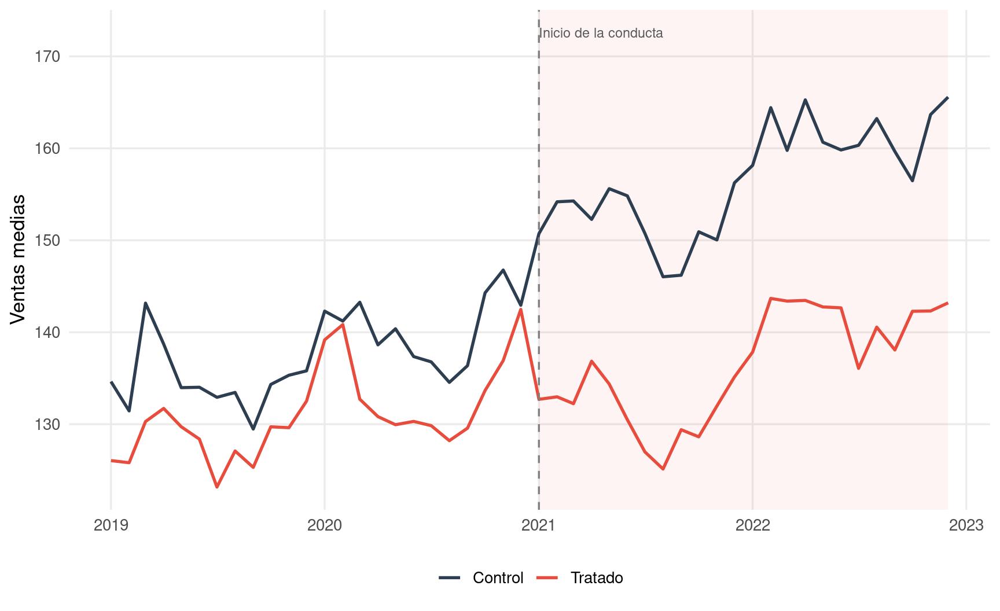

7.1 El método que compara cambios, no solo niveles
Entre todos los métodos de cuantificación de daños, las diferencias en diferencias ocupan un lugar especialmente importante porque permiten responder a un problema que aparece una y otra vez en la práctica pericial: cómo distinguir el efecto de una conducta ilícita de otros shocks que afectan simultáneamente al mercado. Cuando la víctima y el resto del sector están expuestos a una recesión, a un cambio regulatorio o a un encarecimiento general de costes, la simple comparación antes-y-después deja de ser suficiente. El perito necesita una referencia externa. Pero tampoco basta con disponer de un comparable: es necesario comparar no solo niveles, sino cambios.
Esa es, en esencia, la lógica del DID. El método pregunta cuánto cambió la variable de interés en la unidad afectada tras la conducta y cuánto cambió, en el mismo período, en una unidad comparable no afectada. La diferencia entre ambos cambios se interpreta como el efecto de la conducta.
La elegancia del método reside en que elimina automáticamente todos los factores comunes que afectan por igual al grupo tratado y al grupo de control. Si ambas empresas sufren la misma recesión, esa recesión desaparecerá al comparar cambios diferenciales. Si ambas soportan el mismo shock de costes, también desaparecerá. El DID no se limita a construir un contrafactual; construye uno que ya incorpora los shocks comunes del entorno.
Por eso este método es tan valioso en la litigación de daños: permite hablar de causalidad con una fuerza que supera a la del puro before-and-after y, en muchos casos, con una transparencia superior a la de modelos más complejos.
7.2 La intuición: dos grupos, dos períodos, cuatro medias
La intuición del DID puede resumirse en una matriz muy simple. Se observan dos grupos —uno afectado por la conducta y otro no afectado— y dos períodos —antes y después de la infracción. El método calcula primero cómo cambió el grupo tratado entre el período previo y el posterior. Después calcula cómo cambió el grupo de control entre esos mismos períodos. Finalmente, resta ambos cambios.
Si el grupo tratado empeoró en 20 unidades y el grupo de control empeoró en 8, el efecto atribuible a la conducta no es 20, sino 12. Las otras 8 unidades reflejan el deterioro que habría sufrido la víctima aun sin la infracción, porque ese mismo cambio se observa también en el grupo no tratado.
Code
set.seed(307)n <-48fecha <-seq.Date(as.Date("2019-01-01"), by ="month", length.out = n)t <-1:ninicio_tratamiento <-as.Date("2021-01-01")mes_num <-as.integer(format(fecha, "%m"))df_did <-expand_grid(fecha = fecha,grupo =c("Control", "Tratado")) |>mutate(t =match(fecha, fecha |>unique()),mes =factor(format(fecha, "%m")),tratado =if_else(grupo =="Tratado", 1, 0),post =if_else(fecha >= inicio_tratamiento, 1, 0),tendencia =130+0.75* t,estacionalidad =5*sin(2* pi * t /12),shock_comun =if_else(fecha >=as.Date("2020-03-01") & fecha <=as.Date("2020-08-01"), -7, 0),nivel_grupo =if_else(grupo =="Tratado", -6, 0),efecto_tratamiento =if_else(tratado ==1& post ==1, -14-0.08* (t -24), 0),ruido =rnorm(n(), 0, 2.4),ventas = tendencia + estacionalidad + shock_comun + nivel_grupo + efecto_tratamiento + ruido )df_did_plot <- df_did |>group_by(fecha, grupo) |>summarise(ventas =mean(ventas), .groups ="drop")ggplot(df_did_plot, aes(x = fecha, y = ventas, color = grupo)) +annotate("rect",xmin = inicio_tratamiento, xmax =max(fecha),ymin =-Inf, ymax =Inf,fill ="#e74c3c", alpha =0.06) +geom_line(linewidth =0.95) +geom_vline(xintercept = inicio_tratamiento, color ="grey50", linetype ="dashed") +annotate("text", x = inicio_tratamiento, y =max(df_did_plot$ventas) +7,label ="Inicio de la conducta", hjust =0, size =3.1, color ="grey35") +scale_color_manual(values =c("Tratado"="#e74c3c", "Control"="#2c3e50")) +labs(x =NULL, y ="Ventas medias", color =NULL) +theme_minimal(base_size =13) +theme(legend.position ="bottom", panel.grid.minor =element_blank())

Figure 7.1: Intuición del DID: el efecto causal se obtiene comparando el cambio del grupo tratado con el cambio del grupo de control
La Figure 7.1 hace visible esta lógica. El grupo tratado y el grupo de control siguen trayectorias muy parecidas antes de la conducta. Ambos sufren, además, un shock común en 2020. Pero cuando comienza el tratamiento, el grupo tratado se desvía de forma persistente respecto del grupo de control. Esa brecha diferencial posterior, una vez descontados los movimientos comunes, es la estimación causal del daño.
Table 7.1: Estructura 2x2 del DID: medias antes y después para grupo tratado y grupo de control
Grupo
Antes
Después
Cambio
Grupo control
137.59
156.63
19.04
Grupo tratado
130.99
136.38
5.39
Estimación DID
NA
NA
-13.65
La Table 7.1 traduce la intuición gráfica a números. El grupo tratado cae más que el grupo de control. La diferencia entre ambas caídas es la estimación DID. Este paso es crucial ante un tribunal, porque permite explicar el método sin necesidad de entrar todavía en la notación econométrica: «No estamos imputando a la conducta toda la caída del grupo tratado, sino solo la parte que excede a la caída sufrida por el grupo de control».
7.3 La hipótesis crucial: tendencias paralelas
Toda la fuerza del DID descansa sobre una hipótesis central: en ausencia de la conducta, el grupo tratado y el grupo de control habrían seguido trayectorias paralelas. No iguales, sino paralelas. Es perfectamente posible que uno venda más que el otro o que uno tenga márgenes estructuralmente superiores; lo relevante no es la igualdad de niveles, sino la similitud de la evolución.
Esta distinción es fundamental y, sin embargo, se confunde a menudo. En la práctica, algunas impugnaciones periciales alegan que el grupo de control no puede servir de referencia porque sus niveles son distintos a los del grupo tratado. Esa objeción no ataca el corazón del método. El DID no exige que ambos grupos sean idénticos, sino que, sin tratamiento, la diferencia entre ellos se hubiera mantenido razonablemente estable.
Figure 7.2: Lo importante en DID no es la igualdad de niveles, sino la estabilidad de la brecha pretratamiento. La ruptura de esa brecha tras la conducta identifica el efecto.
La Figure 7.2 ilustra esta idea con precisión. La brecha entre tratado y control es relativamente estable antes de la conducta. A partir del tratamiento, esa brecha se deteriora de forma clara y persistente. Ese quiebre de la brecha es lo que DID interpreta como efecto causal.
En un informe pericial serio, la verificación de tendencias paralelas no puede limitarse a una afirmación verbal. Debe apoyarse en gráficos, en análisis descriptivos y, cuando sea posible, en placebos o especificaciones de evento que permitan comprobar si ya existían divergencias sistemáticas antes del tratamiento. Si esas divergencias preexistían, la credibilidad del DID se resiente de forma sustancial.
7.4 La formulación econométrica básica
La versión canónica del DID se expresa mediante una regresión lineal con tres componentes: una indicadora del grupo tratado, una indicadora del período posterior a la conducta y una interacción entre ambas. Formalmente:
donde \(Y_{it}\) es la variable de interés para la unidad \(i\) en el período \(t\), \(\mathrm{Tratado}_i\) identifica a la unidad afectada y \(\mathrm{Post}_t\) identifica el período posterior a la conducta. El parámetro clave es \(\delta\), que mide el efecto diferencial del tratamiento una vez descontadas las diferencias estructurales entre grupos y los shocks temporales comunes.
La interpretación de cada término es muy útil ante un lector jurídico. \(\beta\) captura diferencias permanentes entre grupos. \(\gamma\) captura cambios comunes en el tiempo. \(\delta\) captura la desviación específica del grupo tratado en el período posterior. Es decir, exactamente aquello que buscamos cuantificar.
En aplicaciones más realistas, el DID suele estimarse con efectos fijos de unidad y de tiempo:
donde \(\alpha_i\) recoge la heterogeneidad inobservable constante de cada unidad y \(\lambda_t\) los shocks comunes de cada período. Esta formulación es especialmente útil cuando se dispone de paneles con muchas empresas o muchos mercados observados a lo largo del tiempo.
Table 7.2: Estimación econométrica del DID en el ejemplo simulado
Parámetro
Estimación
Error estándar
IC 95% inferior
IC 95% superior
Tratado × Post
-13.66
2.16
-17.89
-9.43
La Table 7.2 enlaza la explicación conceptual con la implementación econométrica. El coeficiente de la interacción tratado × post reproduce, en esencia, la diferencia en diferencias calculada en la tabla 2x2, pero dentro de una estructura de regresión que luego permite añadir controles, efectos fijos y extensiones más sofisticadas.
7.5 Implementación en R: del modelo simple al panel con efectos fijos
La implementación práctica del DID en R puede comenzar con una regresión elemental y avanzar hacia formulaciones más completas. En un caso sencillo, basta con la interacción tratado × post. En datos de panel más ricos, conviene utilizar efectos fijos y errores estándar robustos o clusterizados.
Code
# DID básicofit_did <-lm(ventas ~ tratado * post, data = panel)# DID con efectos fijos y errores robustosfixest::feols( ventas ~ tratamiento | empresa + fecha,cluster =~ empresa,data = panel)
En contextos con adopción escalonada del tratamiento —por ejemplo, cuando distintas empresas o mercados se ven afectados en fechas distintas— la práctica moderna recomienda evitar la aplicación automática de TWFE estándar si existen efectos heterogéneos en el tiempo. En esos casos, métodos como los de Callaway y Sant’Anna (Callaway and Sant’Anna 2021) o las correcciones tipo Sun-Abraham ofrecen una inferencia más fiable.
Code
# Ejemplo orientativo de staggered DID con métodos modernosdid::att_gt(yname ="ventas",tname ="periodo",idname ="empresa",gname ="fecha_tratamiento",data = panel)fixest::feols( ventas ~sunab(fecha_tratamiento, periodo) | empresa + periodo,cluster =~ empresa,data = panel)
No es necesario que un tribunal domine estas extensiones, pero sí conviene que el perito las conozca. La sofisticación del método debe adaptarse al caso. Un DID elemental puede ser suficiente en un diseño 2×2 limpio. En un panel complejo con tratamientos heterogéneos, quedarse en la versión básica puede convertirse en una fuente de sesgo.
7.6 Relevancia jurídica del DID
El DID tiene una relevancia jurídica muy notable en litigios de exclusión, discriminación, abuso de posición dominante y, en general, en todos aquellos casos donde puede distinguirse con cierta claridad entre unidades afectadas y no afectadas. Su lógica resulta especialmente potente cuando el demandado argumenta que el perjuicio de la víctima obedeció a shocks generales del mercado, no a la conducta. El DID responde precisamente a esa objeción: si el shock general afectó por igual al control, la comparación diferencial lo descuenta.
Por eso el método aparece con frecuencia en casos de exclusión de mercado, descuentos fidelizadores, margin squeeze, negativas de suministro con alcance parcial o prácticas discriminatorias entre grupos de clientes. Es menos natural en cárteles completos que abarcan todo el mercado relevante, porque en esos supuestos suele ser difícil encontrar un verdadero grupo no tratado dentro del mismo mercado. Pero incluso allí puede ser útil si existen territorios, productos o clientes no afectados que funcionen como control.
Desde la perspectiva probatoria, el DID ofrece una ventaja importante: obliga a explicitar la identificación causal. El perito no solo presenta un daño estimado, sino que muestra por qué ese daño no se confunde con otros factores temporales comunes. En litigación, esa explicitación es una fortaleza.
7.7 Sensibilidad y robustez
Como en todo método causal, la calidad del DID no se mide únicamente por la estimación central, sino por su estabilidad al someterse a pruebas de robustez. Entre las verificaciones más importantes están la elección del período previo, la exclusión de shocks transitorios, la inclusión de controles adicionales y la comprobación de placebos pretratamiento.
Code
estimar_did <-function(data, fecha_inicio = inicio_tratamiento, ventana_pre =as.Date("2019-01-01"),incluir_mes =FALSE, excluir_shock =FALSE) { d <- data |>filter(fecha >= ventana_pre) |>mutate(post_alt =if_else(fecha >= fecha_inicio, 1, 0))if (excluir_shock) { d <- d |>filter(!(fecha >=as.Date("2020-03-01") & fecha <=as.Date("2020-08-01"))) } fit <-if (incluir_mes) {lm(ventas ~ tratado * post_alt + mes, data = d) } else {lm(ventas ~ tratado * post_alt, data = d) }tibble(efecto =unname(coef(fit)["tratado:post_alt"]))}sens_did <-bind_rows(estimar_did(df_did) |>mutate(`Especificación`="DID básico"),estimar_did(df_did, incluir_mes =TRUE) |>mutate(`Especificación`="DID + estacionalidad"),estimar_did(df_did, ventana_pre =as.Date("2020-01-01")) |>mutate(`Especificación`="Ventana pre más corta"),estimar_did(df_did, excluir_shock =TRUE) |>mutate(`Especificación`="Excluyendo shock común 2020")) |>mutate(`Efecto estimado`=round(efecto, 2)) |>select(`Especificación`, `Efecto estimado`)sens_did |> knitr::kable(format ="pipe",align =c("l", "r"))
Table 7.3: Análisis de sensibilidad del DID bajo especificaciones alternativas
Especificación
Efecto estimado
DID básico
-13.66
DID + estacionalidad
-13.66
Ventana pre más corta
-13.56
Excluyendo shock común 2020
-14.19
La Table 7.3 muestra el tipo de información que conviene aportar. Si el efecto estimado permanece relativamente estable al cambiar la ventana previa, al añadir estacionalidad o al excluir un shock transitorio, el perito gana en credibilidad. Si el resultado se desmorona con cambios menores, la debilidad no está necesariamente en el método en abstracto, sino en la fragilidad del diseño concreto.
7.8 Errores frecuentes en el uso de DID
El error más común consiste en invocar el DID sin demostrar tendencias paralelas. Es, en esencia, el equivalente metodológico a querer beneficiarse de la reputación causal del método sin pagar el precio analítico que exige. Si las trayectorias ya divergían antes del tratamiento, la estimación posterior no puede interpretarse con confianza como efecto causal.
Otro error muy extendido es confundir “paralelo” con “idéntico”. La comparación correcta no exige mismos niveles, sino evolución comparable. Esta confusión lleva a veces a descartar controles válidos o, peor aún, a seleccionar controles artificialmente parecidos en nivel pero peores en dinámica.
Un tercer error, especialmente relevante en paneles más complejos, es aplicar automáticamente un modelo TWFE con tratamientos escalonados y efectos heterogéneos. La literatura reciente ha mostrado que esa práctica puede generar ponderaciones problemáticas e incluso estimaciones sesgadas. El perito debe saber cuándo el diseño es un simple 2×2 y cuándo no lo es.
También es frecuente no examinar la composición de los grupos a lo largo del tiempo. Si cambian los clientes, los productos o las unidades que integran tratado y control, el DID puede estar capturando un cambio de composición más que un efecto causal de la conducta.
Por último, existe el error procesal de presentar el DID como si fuera un dispositivo automático que convierte cualquier dataset en causal. No lo es. Un DID mal diseñado puede ser menos fiable que un before-and-after bien ejecutado. Lo decisivo no es el nombre del método, sino la calidad del diseño empírico.
7.9 Lo que un tribunal debe retener de este método
Si hubiera que condensar el DID en una sola frase útil para un tribunal, sería esta: el método no pregunta cuánto empeoró la víctima, sino cuánto empeoró en relación con lo que empeoró un grupo comparable no afectado.
Esa idea, aparentemente simple, es la que convierte al DID en una de las herramientas más poderosas de la cuantificación de daños. Permite separar el efecto de la conducta de los shocks generales del entorno y dota al perito de un argumento causal sólido, siempre que la comparación previa sea creíble. Cuando esa credibilidad existe, el DID deja de ser solo una técnica econométrica y se convierte en una pieza probatoria particularmente convincente.
Callaway, Brantly, and Pedro H. C. Sant’Anna. 2021. “Difference-in-Differences with Multiple Time Periods.”Journal of Econometrics 225 (2): 200–230.